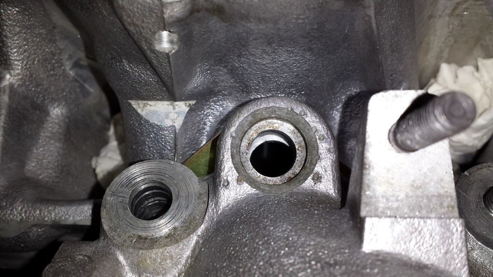
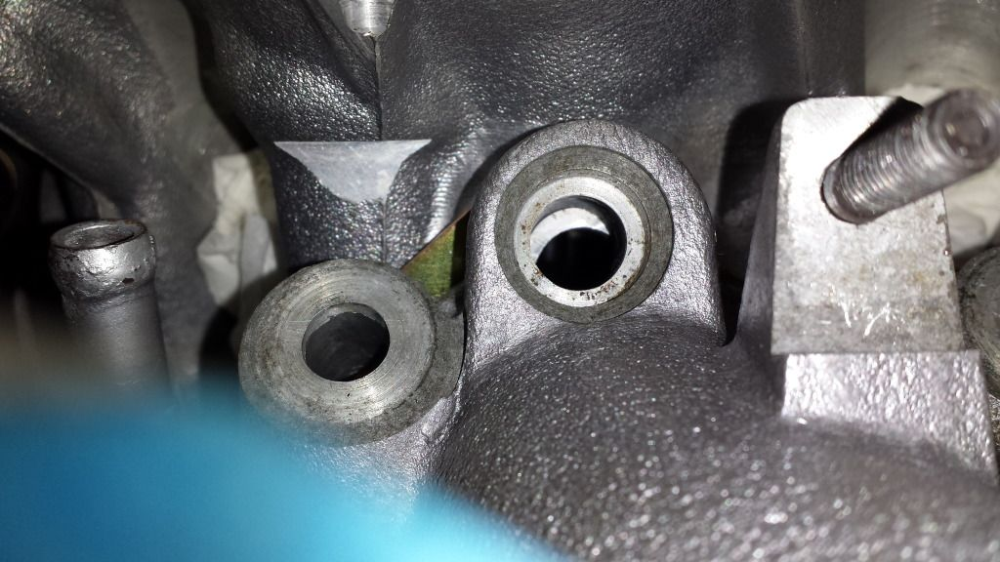
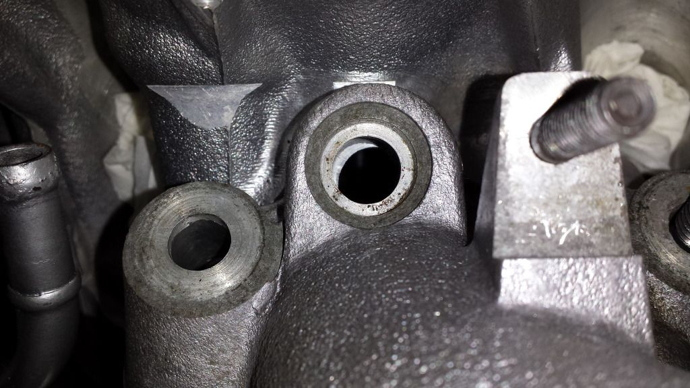
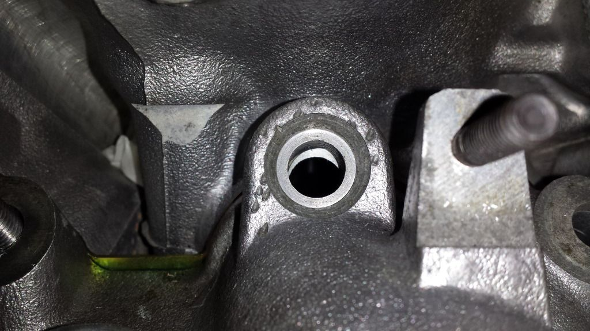
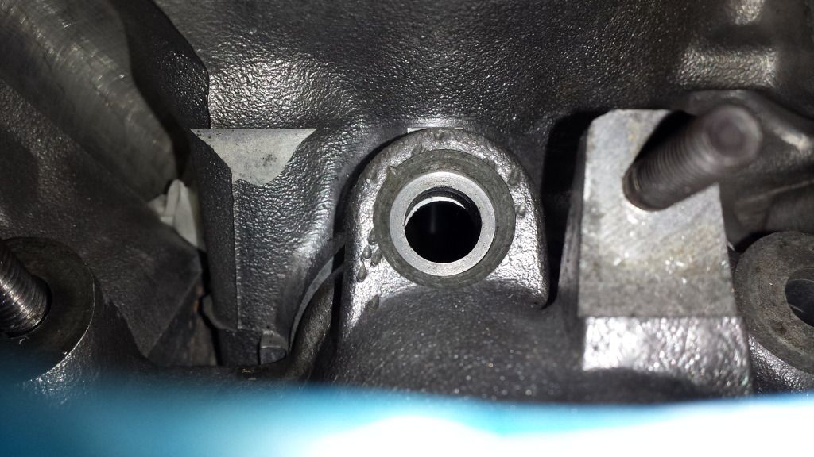

-
Okay. I'm stumped. I'm not sure why this is so weird.
Passenger side with gasket:

Passenger side WITHOUT gasket:

Okay sweet....basically take off the gasket amount (around .060").
Now..here's what I don't get.
Drivers side with gasket (far rear cylinder port):

Driver's side without gasket:

Drivers side with gasket (front of engine):

Drivers side without gasket (front of engine):

How in the hell do I even calculate this out since its moving them different amounts on the front and rear. I want to finish this stupid project already and start the car.Usual Z31 suspect: Garage Queen (aka broken)

-
The angle it was shaved might be off a degree or two not seating all the way down in the bowl -
I made sure the LIM was sitting flat on the ports. How do I even go about this.Usual Z31 suspect: Garage Queen (aka broken)
-
At the risk of sacrificing the gaskets, have you torqued it down to see the alignment then? -
I have an extra set of gaskets. I think it was still crooked.Usual Z31 suspect: Garage Queen (aka broken)
-
You were right paul when torqued down they are all straight…thought my gaskets were squared up…guess nott! Drivers side is actually not square when manifold to manifold though with no gasket. Still need to take off about .08-09 on drivers and .06" on passenger…yikes!Usual Z31 suspect: Garage Queen (aka broken)
-
I wondered about this a few years ago When everybody was doing this swap. When I made intake flange a few years back we noticia the same thing with and without gaskets. Have you measured the vg33 lim?"Its the s12's sexy over weight step daughter, the z31" -
I don't have a VG33 LIM. Should I get one before machining mine? Or can someone measure injector port to injector port on both sides for me (as in across)?
Was planning on taking it to get machined today. Would be easier if vg33 LIM just fit. Honestly I CAN'T be that far off. I'm not sure how I am.Usual Z31 suspect: Garage Queen (aka broken)
-
If the floor of the intake ports line up should I even worry.Usual Z31 suspect: Garage Queen (aka broken)

Copyright © 2006–. All rights reserved. Privacy Policy